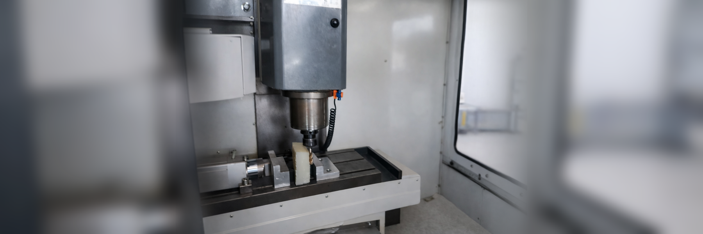

Project
Manufacture a design from a digital model using computer-assisted manufacturing processes, then mill it using a CNC machine.
A part was designed in CAD and its manufacturing process was generated using CAM to obtain the G-code. The CNC machine was then configured, the workpiece zero was set, and the program was executed on a block of Nylamid, obtaining the expected geometry according to the digital design.
Design of the part in CAD, generation of the CAM process, CNC machine setup, and execution of the machining.
A physical part was obtained with geometry matching the designed digital model.